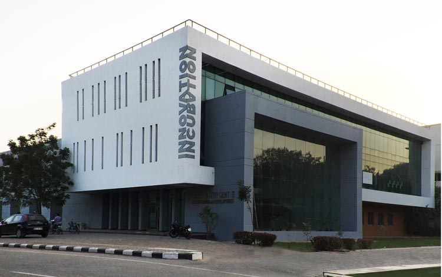

National Institute of Technology Warangal, formerly known as Regional Engineering College, was established in 1959. Pandit Jawaharlal Nehru laid the foundation stone for this institute on October 10, 1959, the first in the chain of 31 NITs (formerly known as RECs) in the country.
The Institute is well known for its dedicated faculty, staff and the state-of-the art infrastructure conducive to a healthy academic environment.The Institute is constantly striving to achieve higher levels of technical excellence. Evolving a socially relevant and yet internationally acceptable curriculum, implementing innovative and effective teaching methodologies and focusing on the wholesome development of the students are our concerns. Thanks to UNESCO and UK assistance in the past, many developmental activities were undertaken. The World Bank Assistance under Technical Education Quality Improvement Programme (TEQIP) had been a timely help in the overall development of the Institute.

Key Milestone
- 1959: Foundation stone laid by Pandit Jawaharlal Nehru on October 10, establishing it as the first Regional Engineering College (REC) in the country.
- 1959: The Society of Regional Engineering College, Warangal, was registered on November 10.
- 2002: Renamed the National Institute of Technology, Warangal (NIT Warangal) and declared a Deemed University.
- 2004: The first convocation was held on March 1.
- 2018: Diamond Jubilee Celebrations were organized.

Mission
The National Institute of Technology Warangal's mission is to become a global knowledge hub by providing quality education to develop innovative and ethical professionals, fostering research for societal needs, and promoting entrepreneurial and technological services. Key aspects include offering total quality education, encouraging product-oriented research, and fostering self-sustaining centers to meet societal demands.
Key components of the NITW mission:
- Quality Education: Imparting total quality education to develop innovative, entrepreneurial, and ethical future professionals who can compete globally.
- Research: Fostering product-oriented research to create a self-sustaining and wealth-creating center to serve societal needs.
- Entrepreneurship: Developing professionals with entrepreneurial skills for a globally competitive environment.
